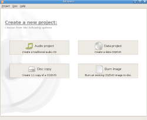

Introduction

See Brasero in action
Brasero is a application to burn CD/DVD for the Gnome Desktop. It is designed to be as simple as possible and has some unique features to enable users to create their discs easily and quickly.
Features
- Supports multiple backends: cdrtools, growisofs and libburn(optional).
Note: compiling against libburn is _not_enough. You need to activate the backend through GConf editor at "/apps/brasero/config/libburn_burn and /apps/brasero/config/libburn_iso"
Data CD/DVD:
- supports edition of discs contents (remove/move/rename files inside directories)
- can burn data CD/DVD on the fly
- automatic filtering for unwanted files (hidden files, broken/recursive symlinks, files not conforming to joliet standard, ...)
- supports multisession
- supports joliet extension
- can write the image to the hard drive
- can check disc file integrity
Audio CD:
- write CD-TEXT information (automatically found thanks to gstreamer)
- supports the edition of CD-TEXT information
- can burn audio CD on the fly
- can use all audio files handled by Gstreamer local installation (ogg, flac, mp3, ...)
- can search for audio files inside dropped folders
- full edition of silences between tracks
CD/DVD copy:
- can copy a CD/DVD to the hard drive
- can copy CD and DVD on the fly
- supports single-session data DVD
- supports any kind of CD
Others:
- erase CD/DVD
- can save/load projects
- can burn CD/DVD images and cue files
- song, image and video previewer
- device detection thanks to HAL
- file change notification (requires kernel > 2.6.13)
- a customisable GUI (when used with GDL)
- supports Drag and Drop / Cut'n'Paste from nautilus (and others apps)
- can use files on a network as long as the protocol is handled by gnome-vfs
- can search for files thanks to beagle (search is based on keywords or on file type)
- can display a playlist and its contents (note that playlists are automatically searched through beagle)
- all disc IO is done asynchronously to prevent the application from blocking
- Tarball of stable release
Brasero 0.7.0
-
From Gnome SVN
svn co http://svn.gnome.org/svn/brasero/trunk brasero
Are you a coder, artist, documentation writer or translator? Join the fun!
Brasero is developed by:
- Philippe Rouquier
- Luis Medinas
Brasero is released under the GNU General Public License (GPL).